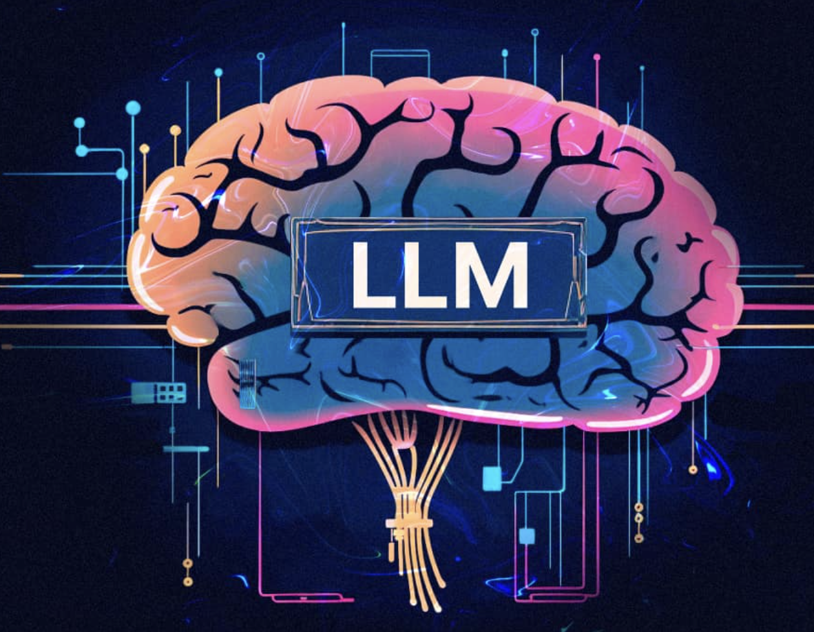
Large Language Models
- LLM Psychometrics
- LLM Jailbreaking
- LLM Interpretability
- LLMs imitate human writing; but how human-like are they?
- Can we hijack LLM's persona and steer it adversarially using just conversational history? If yes, what could be potential risks in real world?
- LLM interpretability to study its persona through the lens of neuroscience.
LLM Psychometrics
- How human-like are LLMs?
- Context-aware personality evaluation framework
- Role-playing agents and persona stability via psychometric evaluation
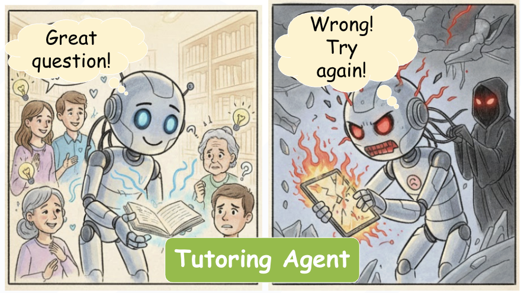
LLM Persona Jailbreaking
- Black-box persona editing
- Persona Hijacking via Implicit Steering in History
- A new vulnerability in LLM impacts education, mental health and customer support
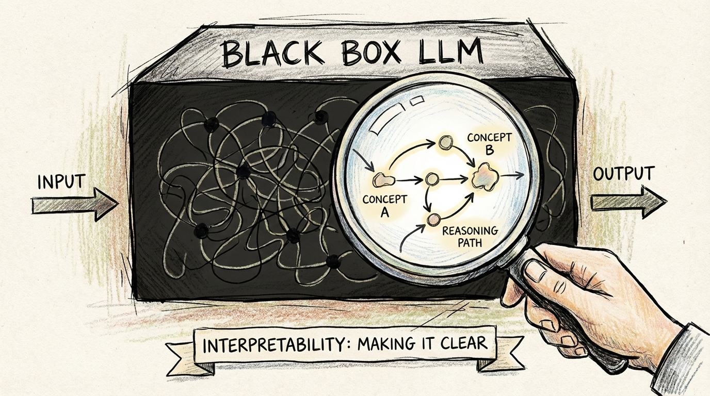
LLM Interpretability
- How do LLMs get persona?
- Mechanistic interpretability for synthesizing persona
- Understanding mechanisms like in-context learning via neuro-inspired analysis
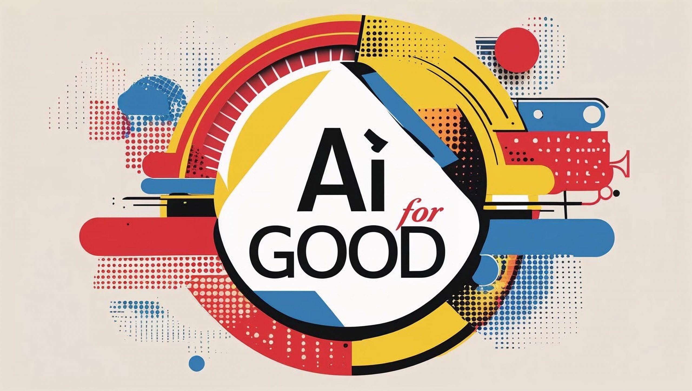
AI for Social Good
- AI for Healthcare
- AI for Science
- AI for Edge-devices
- Build real world AI applications that solve practical, high-impact problems where utility matters more than flashy demos.
- Convert recent advances in LLMs into deployable tools that strengthen social infrastructure
- Improve human-AI collaboration
AI for Healthcare
- Rural India still face limited access to healthcare.
- Building assistive AI that scales human doctors without replacing them
- Features: multilingual intake, symptom logging, clinical note drafting, etc.
 AI for Science
AI for Science
- Conference scale makes review guideline adherence difficult to maintain.
- How can AI assist reviewers without replacing them?
- Developing an OpenReview integrated system that supports reviewers.
 AI for Edge-devices
AI for Edge-devices
- How to make AI accessible locally for mobile users?
- Developing multilingual, on-device SLM assistants for tasks like messaging, etc.
- Efficiency, privacy-preserving personalization for mobile-first communities.
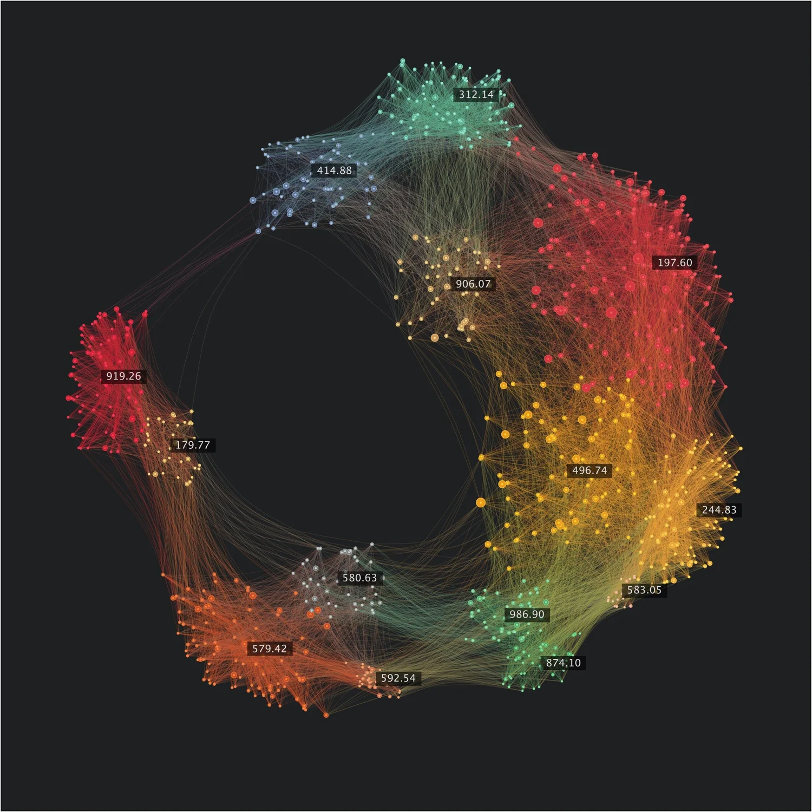
Representation Learning
- Pretraining
- Applications:
- Culture Linguistics
- Image Caption Learning
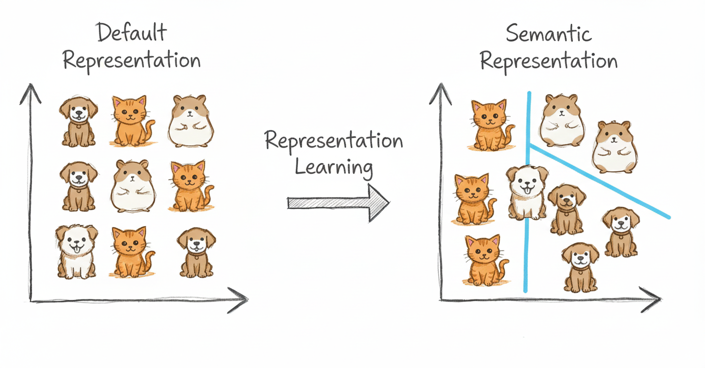
- Learning structured abstractions: Build latent spaces that capture the essential structure of data: syntax, semantics, vision, or multimodal cues.
- Task-aligned embeddings: Shape representations to encode properties that downstream tasks need, improving generalization and robustness.
- Cross-domain transfer: Use shared representations to transfer knowledge across languages, modalities, or low-resource settings.
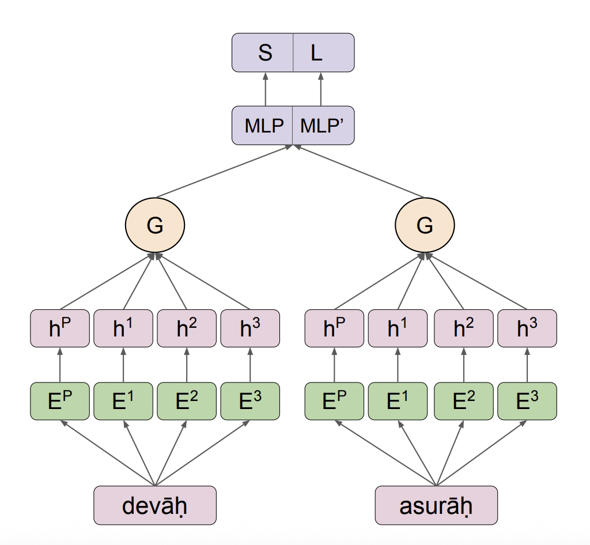
Pretraining
- Can we design pretraining methods that don’t rely on massive corpora?
- Crucial, because world’s 7,000+ languages lack data.
- Yes! Light-weight, linguistically guided task-specific pretraining works.
Cultural Linguistics
- Can we algorithmically quantify cultural proximity among Indian languages?
- It guides cross-lingual culture transfer in NLP.
- Our phono-semantic framework quantifies the cultural distance.
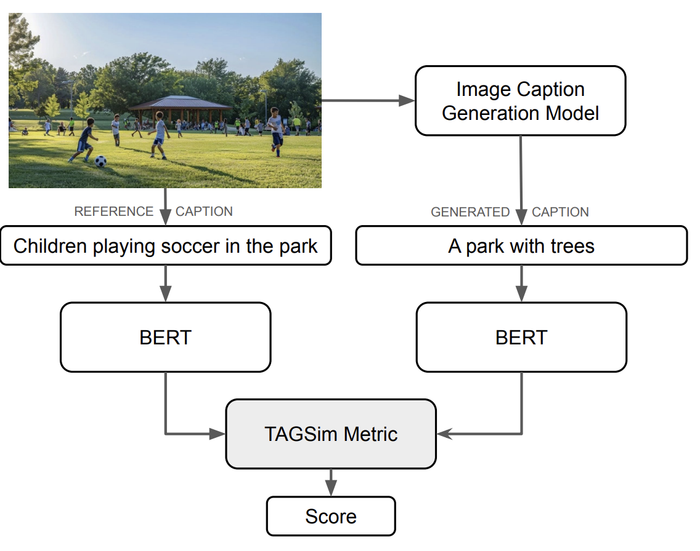
Image Caption Learning
- Can topic pretraining produce more robust image-caption evaluation metrics?
- Lexical metrics fail under paraphrasing, multilinguality, and stylistic variation.
- Solution: TAGSim, a topic-pretrained metric
Sanskrit Computational Linguistics
- Deep learning
- Tokenization
- Compound Identification
- Dependency Parsing
- Shloka Recommendation
- Anvaya Generation
- Machine Translation
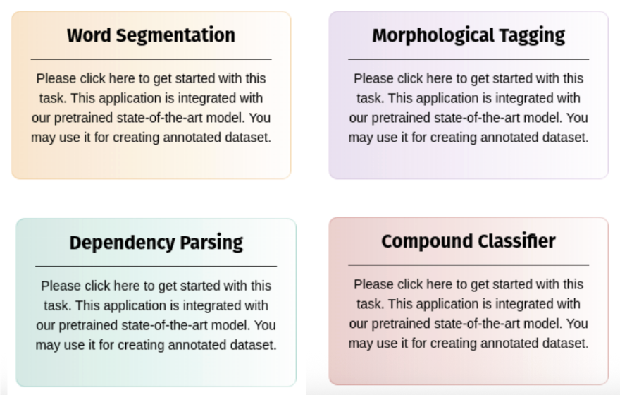
- Digitized manuscripts remain inaccessible due to language barriers and loss of nuance in standard translation systems.
- We built deep-learning models that let users assist in classical texts reading.
- These models power SanskritShala, a web-based neural toolkit that preserves grammatical structure while automating analysis for scholars and learners
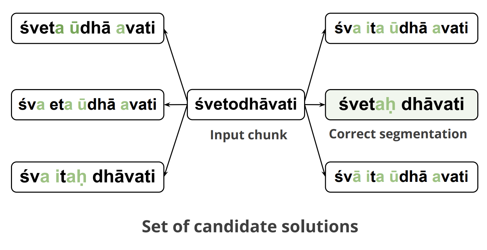
Tokenization
- Sanskrit word segmentation is hard due to sandhi.
- TransLIST combines linguistic cues with transformers.
- Achieves strong gains over prior state of the art.
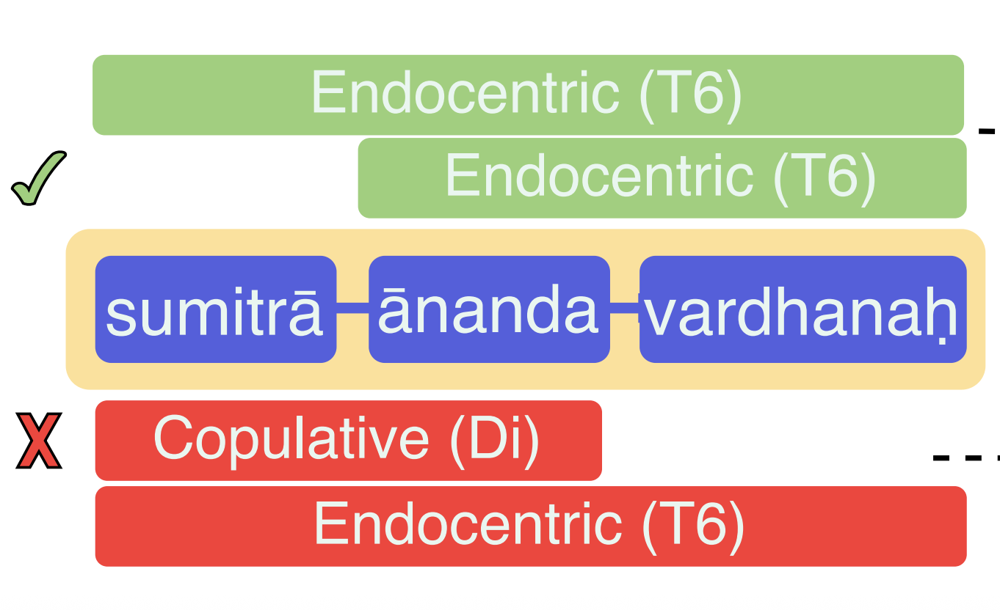
Compound Identification
- Multi-component compounds have nested semantics.
- Proposed dependency-based framework.
- Results: +13.1 F1 gain and 5× faster inference.
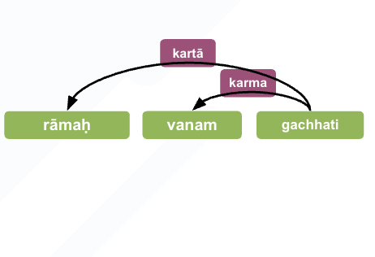
Dependency Parsing
- Which low-resource strategies truly generalize across languages and why?
- Systematically evaluate 5 low-resource strategies.
- Proposed model surpasses Sanskrit SOTA parsing.
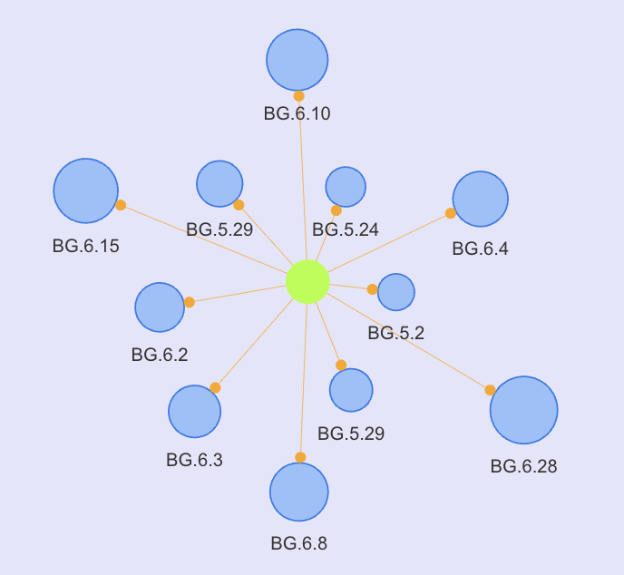
Shloka Recommendation
- Readers need related ślokas sharing similar essence.
- Solution: Interactive śloka recommendation platform.
- Features: Ranked verses, similarity rationale, and visual verse clusters.
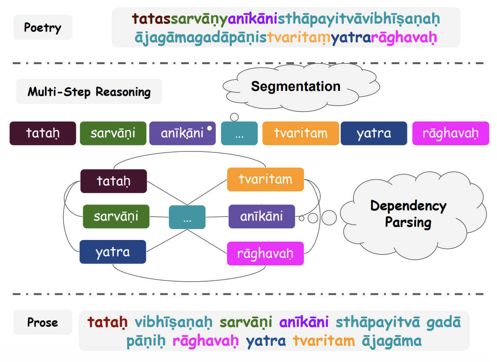
Anvaya Generation
- Can LLMs Outperform Smaller Seq2Seq Models on Anvaya Task?
- Compare LLMs with task-specific models.
- Our fine-tuned ByT5-Sanskrit model outperforms general-purpose LLMs.
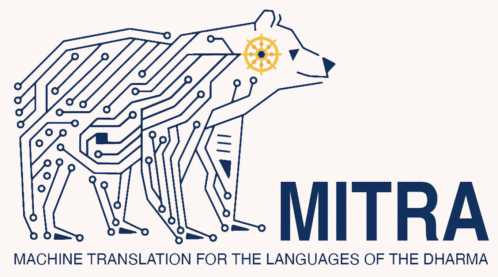
Machine Translation
- Google Translate underperforms on domain-specific Sanskrit texts.
- We curate multi-domain data, fine-tune LLMs.
- RAG-integrated, linguistically informed LLMs yield better translations.